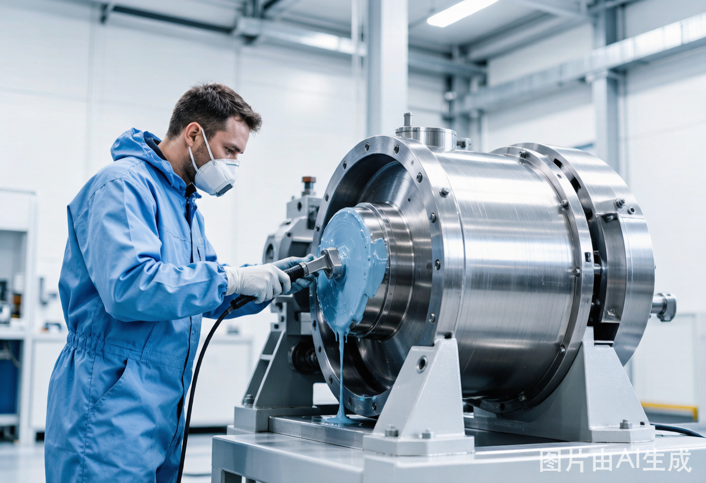

我们是一家专注工业设备修复与腐蚀防护的技术服务企业，用专业与责任守护客户的每一台关键设备。

昆明远驰商贸有限公司立足于工业设备后市场服务，聚焦设备腐蚀、磨损、泄漏与能耗等典型痛点，提供修复、防护、节能与环保治理的整体解决方案。
我们坚持“以工艺立身、以材料取胜”，依托成熟的施工体系与可靠的修复材料，帮助化工、电力、水务、制造等行业客户延长设备寿命、降低运维成本、达成环保合规。
只做工业修复与防护，把每一项工艺做到极致。
优先采用环保材料与低排放工艺，助力绿色生产。
从工况出发定制方案，让投入产出清晰可衡量。
不止于一次施工，更提供持续跟踪与优化建议。
组建专业技术团队，切入工业设备修复与防腐服务市场。
业务延伸至换热器、水泵、阀门、储罐内衬等核心设备修复。
引入 VOC 治理与工业地面治理能力，服务绿色低碳转型。
形成“勘察—设计—施工—验收—跟踪”的全流程服务体系。
我们始终相信，优秀的修复不仅是让设备“修好”，更是让客户“省心、省钱、可持续”。